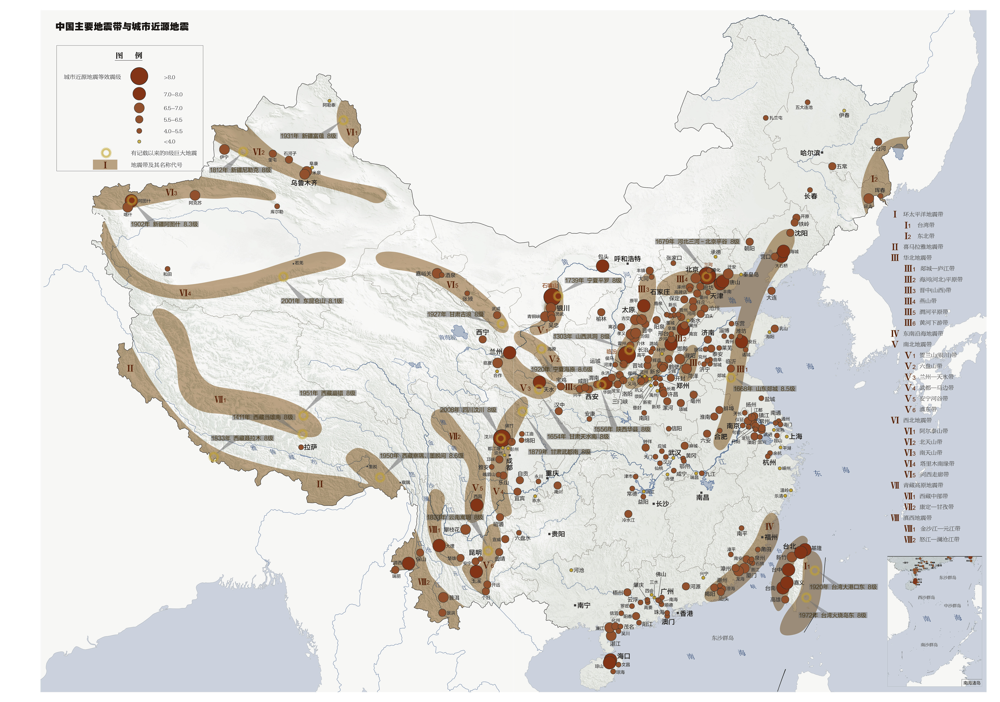
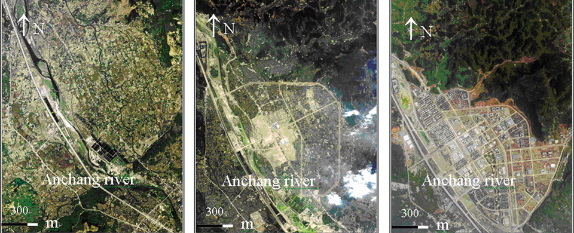

4 Week 4 Policy
4.1 Summary
Wenchuan County is located in the northwestern part of Sichuan Province, in the southeastern part of Aba Prefecture, on both sides of the Min River. It is the southern gate of Aba Prefecture and is known as the “lock and key of western Sichuan” and the “gateway to western Qiang”. It is the hometown of Dayu. It is 1,326m above sea level, 159km from the provincial capital Chengdu and 204km from the state capital Markang(Aba Prefecture Government, 2008).
Earthquakes in China tend to be densely distributed in zones, mainly in Taiwan, southwest China, northwest China, southeast coastal areas and 23 seismic zones（see Figure 4.1 for detail of earthquake zone distribution of China）. Where Sichuan province is located in the Yinchuan-Hetao seismic zone, which is also the dividing line between the seismic activity zones in the east and west of China(CAS, n.d.). The root cause of the frequent earthquakes in Sichuan is that it is located at the junction of the Asian-European and Indian Ocean plates, and is being squeezed by both plates, resulting in stresses that exceed the plate carrying capacity and generate fractures that eventually trigger earthquakes.

In 2008, a massive earthquake measuring 8.0 on the Richter scale struck Wenchuan County, Aba Tibetan and Qiang Autonomous Prefecture, Sichuan Province, killing 69,227 people, injuring 374,643 and leaving 17,923 missing(China News 2008). There are 10 counties (cities) in the very hardest-hit area, 41 counties (cities) in the harder-hit area, and 186 counties (cities) in the general hardest-hit area(Ministry of Civil Affairs 2008). The Wenchuan earthquake was the most destructive, widest-reaching, most costly and most difficult to respond to since the founding of the People’s Republic of China.
Against this backdrop, the Chinese government and local authorities have developed a geological hazard prevention and control plan (60 pages) and an earthquake mitigation plan (20 pages) in each of their five-year plans. These two plans include geological hazard risk survey and evaluation, risk management, monitoring and early warning, avoidance and relocation, information construction and capacity building (Ministry of Natural Resources 2022; Sichuan Earthquake Administration 2021).
The earthquake prevention and mitigation plan states that there are still a number of problems in Sichuan: insufficient earthquake monitoring and forecasting capabilities, weak prevention and control capabilities in the face of disaster risks, and a lack of disaster relief capabilities and awareness among citizens(Sichuan Earthquake Administration 2021).
4.2 Application
Since the National 11th Five-Year Plan for Science and Technology Development (2001-2005), in order to implement relevant national research programs and major science and technology special projects, the research and application system construction of seismic remote sensing has been highly valued, deployed and developed systematically and comprehensively. Remote sensing geology has become a fundamental tool for earthquake research, and satellite technology, represented by satellite infrared, InSAR, and Global Navigation Satellite System (GNSS), has played an important role in earthquake monitoring and forecasting(Shen et al. 2013).
Specifically, the use of satellite remote sensing (SRS) imagery and the use of building damage index (DI) to assess the extent of damage to buildings can be applied to earthquake casualty estimation(Feng et al. 2013). In fact, the number of casualties can be estimated not only from the extent of building damage but also from nighttime light images: the population can be estimated by using the extent and density of light and comparing before and after images to determine the number of people affected(He et al. 2022).
Remote sensing is also playing an increasingly important role in the field of earthquake prediction. The reason why earthquakes can be predicted is that they are preceded by anomalous signs: thermal anomaly, electromagnetic signal anomaly, crustal deformation, and gravity anomaly, of which thermal remote sensing is the most widely used, electromagnetic remote sensing is the most accurate, GPS is the most direct, and gravity remote sensing is the least used(Zhao et al. 2021). The thermal anomaly is the most widely used, the electromagnetic anomaly is the most accurate, the GPS is the most direct in observing crustal deformation, and the gravity anomaly is the least used(Zhao et al. 2021).
Of course, remote sensing can also be applied to post-disaster reconstruction assessment. See Figure 4.2 for detail of the differences.

4.3 Reflection
The most rewarding part of the week was that I was able to gain a deeper understanding of the uses of remote sensing through researching papers and policies. I had not previously thought that remote sensing could be used in so many ways, nor had I thought that remote sensing images could be used to build models with significant accuracy.